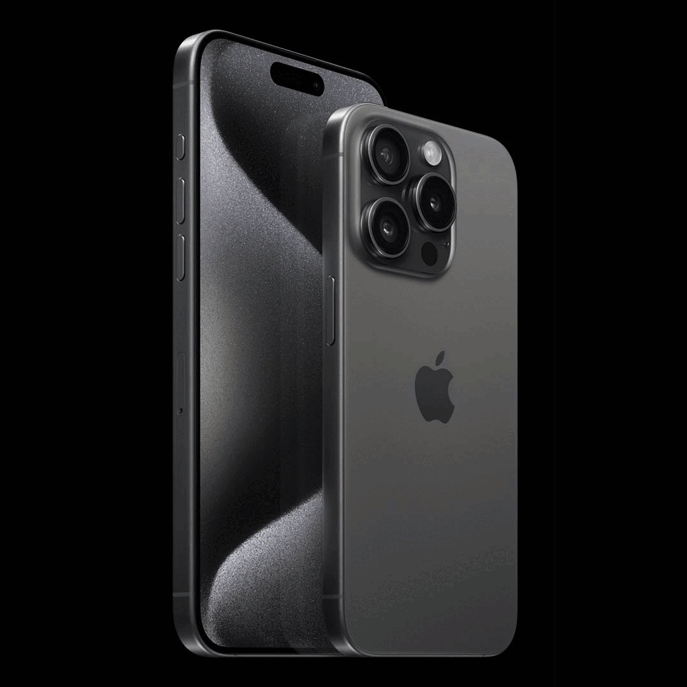
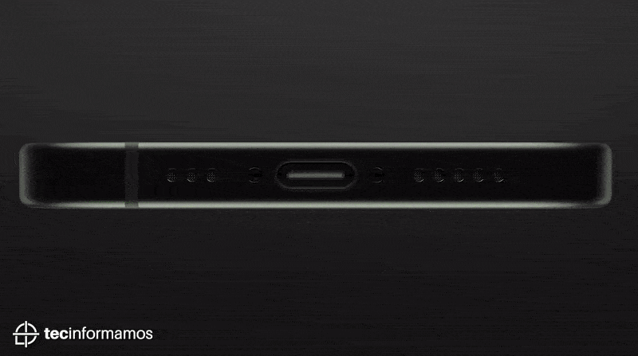
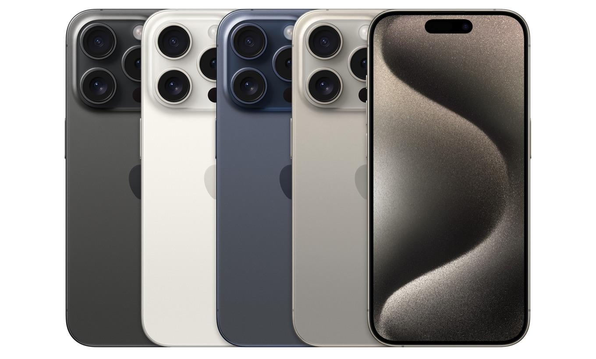

Tu iPhone 15 a la vuelta de la esquina
El futuro está más cerca que nunca. Con el nuevo iPhone 15, Apple redefine la innovación y el diseño. Prepárate para una experiencia única con mayor potencia, cámaras mejoradas y el revolucionario puerto USB-C. ¡Muy pronto disponible en todo el Perú!
Nuevo diseño
El iPhone 15 Pro Max presenta un diseño completamente renovado con un enfoque en la innovación y los materiales premium. Su estructura está fabricada con titanio de grado aeroespacial, lo que lo hace más ligero y resistente que nunca.
Entrada Tipo C
El iPhone 15 Pro Max ahora incluye puerto USB-C, lo que permite cargas más rápidas y eficientes, y mayor compatibilidad con otros dispositivos. Carga hasta un 50% en solo 30 minutos con un cargador de 20W o superior.
Colores
El iPhone 15 Pro Max está disponible en cuatro acabados de titanio elegantes y sofisticados: Titanio Natural, Azul Titán, Blanco Titán y Negro Titán.